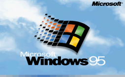

- 1998: Nascem os CDs graváveis e regraváveis (CD-RW); Microsoft lança o
Windows 98.


- Filmes/desenhos/séries:
- 1997: Satoshi Tajiri cria o Pokémon (anime)
- Músicas de sucesso:
- 1995: morrem, num acidente aéreo, todos os integrantes do grupo musical
Mamonas Assassinas.
- Acontecimentos diversos:
- 1999: o euro passa a circular em 11 países da União Europeia.